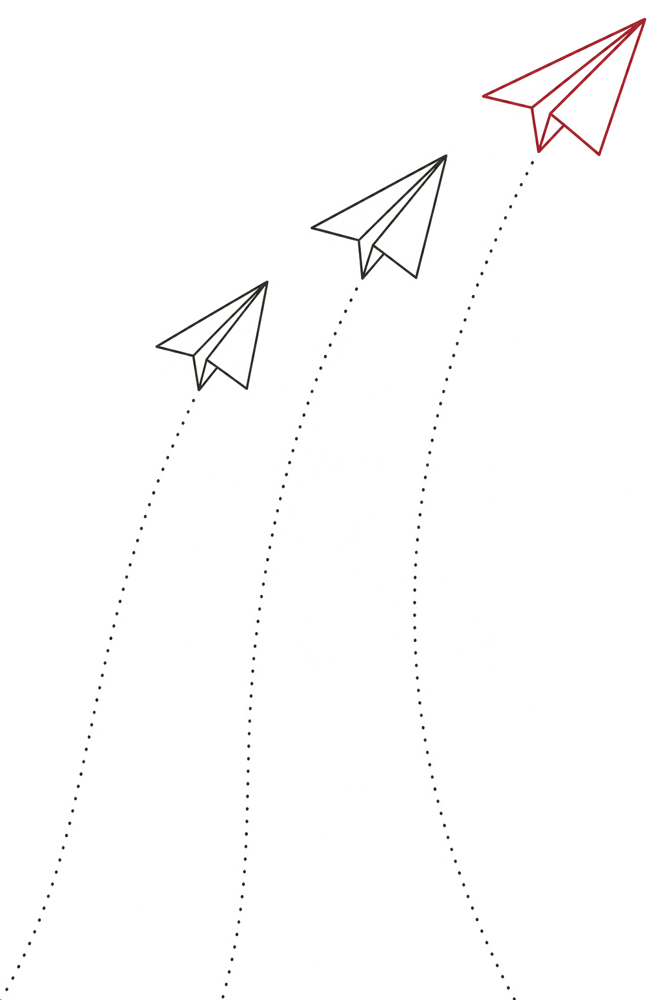
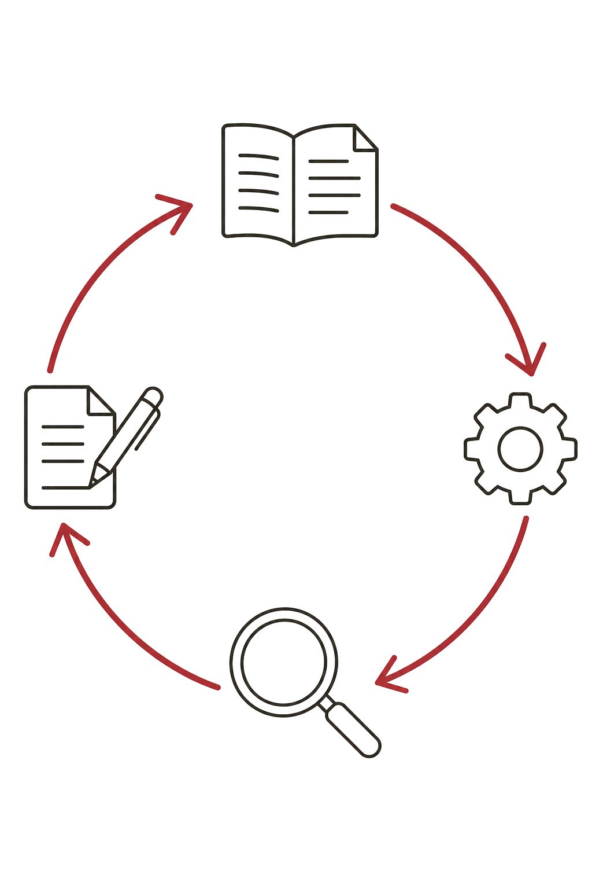
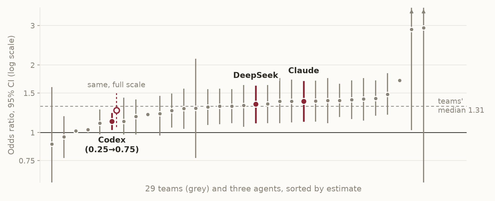

StartTwo cases, three agents: we set the runs going.
MeanwhileHow coding agents work, and how to work with them.
ResultsWe look at what came back.
LastWhat still needs a human, then your questions.
Follow along on your own machine, or just watch.
Case A · small, runs in seconds
"Female hurricanes are deadlier than male hurricanes"
92 US hurricanes, 1950–2012. Storms with more feminine names killed more people.
The authors' explanation: people take a storm with a feminine name less seriously.
The data are open. use them as a worked example for specification curve analysis.
, PNAS, 111(24), 8782–8787.
Case B · larger, many analysts
Do referees give more red cards to dark-skin-toned players?
29 teams analysed the same data: 146,028 player–referee pairs.
0.89 – 2.93
range of odds ratios (median 1.31)
20 of 29
teams had a confidence interval that excluded 1
Our agents see this spread only after they finish their own analysis.
, AMPPS, 1(3). Numbers from the teams' estimates file on OSF.
Case A · the prompt, verbatim
What each agent gets
This folder contains the data behind Jung et al. (2014), "Female hurricanes are deadlier than male hurricanes", PNAS, https://doi.org/10.1073/pnas.1402786111. README.md describes the variables.
1. Reproduce the main result of the paper. Write one script (R or Python) that runs from a clean start and produces every number you report.
2. Put your estimates next to the published ones in a table. For each published number, say where you got it: a source you opened in this session (give the URL), or your memory of the paper.
3. List each analysis decision you had to make that the paper did not settle for you.
4. Test how robust the result is. Before running anything, list 6–10 alternative choices that a reasonable analyst could defend, and say which ones you expect to change the conclusion. Then run all of them, and summarise the estimates in one table and one figure. Keep the research question fixed.
5. End with two or three sentences on whether the headline claim holds up.
Write the results to report.md in this folder.
Case B: the agent chooses its own analysis, and compares it with the 29 teams only afterwards.
Pick case A, case B, or your own paper with open data.
You need an agent you already use (Claude Code, Codex, OpenCode) and R or Python.

Kick-off
Three agents, same prompt
Claude, in Claude Code
Codex
DeepSeek Flash, through OpenCode
All three run from T3 Code, one thread per agent and case.
While they run
Working with coding agents
What an agent does, how to run several at once, and how to write a prompt it can work with.
How an agent works
Getting AI to run in circles
your goal ›
LLM
proposes the next command
——›command"Rscript model.R"
‹——result"coefficient table"
Your machine
runs it, sends back the result
› final answer
↻ repeat until the goal is met. The LLM only ever writes text; your machine does the doing.
Tools it can call
read part of a filesearch the websearch your filesedit a filerun codeask you a question
The interface today
One window, several agents
T3 Code is a free, open-source desktop (and web) app from Ping.
One interface for coding agents such as Claude Code, Codex and OpenCode.
You sign in with your own accounts, so you pay the agent providers as usual.
Each run is a thread, with a diff viewer for the files it changed.
Today: the same prompt in three agents, side by side.
The agents work fine in a terminal or in their own apps. T3 Code is a convenience. t3.codes
Choosing
Which agent?
Claude Code
Anthropic's agent. Comes with a Claude subscription: the standard paid plan is around $20/month.
Codex
OpenAI's agent. Comes with a ChatGPT subscription: the standard paid plan is around $20/month.
OpenCode
Open-source agent that works with many model providers. Today with DeepSeek Flash: paid per use, and much cheaper per task.
The models change every month. The habits on the next slide carry over.
Behind the prompt
Four habits, in this prompt
Context
The paper, and a README that describes the variables.
"the data behind Jung et al. (2014) … README.md describes the variables"
Grounding
The data, and one script that runs from a clean start.
"one script … produces every number you report"
Plan/questions
List the alternatives and predictions before running them.
"Before running anything, list 6–10 alternative choices"
Verify
Published vs. reproduced, with the source of each number, and a list of decisions.
"say where you got it"
Before you try it on your own data
Can I use AI with my data?
Easy
Published open data, like today's two cases.
With care
De-identified data you are allowed to share.
Never*
Identifiable participant data.
* without a data processing agreement (and ethics approval), e.g. an enterprise contract or an approved secure environment.
Before we look at results
A caveat: famous papers are in the training data
Asked from memory: no files, no web
All three agents gave Silberzahn's numbers exactly: 29 teams, odds ratios 0.89–2.93, 20 significant.
DeepSeek put the hurricane paper on pp. 10185–10190. It is on pp. 8782–8787.
What to do
The prompt asks for the source of each published number.
For real checks, use material the model cannot have memorised: your own work, or recent work.

Back to the runs
What came back
The report, the script, and the trace of what each agent did.
Case A · results from last night's runs
Same model, three headline numbers
Published
Claude
Codex
DeepSeek
Name × damage
0.705
0.705
0.705
0.705
Its SE
0.184
0.150
0.184
–
Paper read from
PubMed Central
a PDF on a cycling blog
PubMed Central
"Severe storm" effect
15 vs 42 deaths
+0.88 log deaths per SD
ratio 1.51 (75th pct damage)
ratio 4.37 (90th pct damage)
The coefficients reproduce exactly. The paper never says what counts as a severe storm, so each agent picked its own point, and each headline differs.
Case A · results from last night's runs
Which robustness checks did they choose?
Does the effect survive…
Claude
Codex
DeepSeek
only storms from 1979 on
no
no
no
log damage
no
no
–
no interaction terms
no
–
no
binary name gender
yes
yes
yes
dropping the deadliest storms
yes
yes
–
the other pressure variable
yes
yes*
yes
Each ran 9–10 checks, and all three concluded that the claim is fragile. All three chose the 1979 split: the best-known critique of the paper.
* Codex's check changed nothing: both runs used the same pressure variable.
Case B · results from last night's runs
Three analysts, three answers?
Claude
Codex
DeepSeek
Model
mixed model, player & referee random effects
logistic, clustered SEs
logistic, clustered SEs
Outcome
red cards
red cards + second yellows
red cards
Skin-tone contrast
very light → very dark
0.25 → 0.75
very light → very dark
Odds ratio [95% CI]
1.38 [1.12, 1.70]
1.12 [1.03, 1.22]
1.34 [1.10, 1.62]
Time to finish
about 1 hour
8.5 min
51 min
Codex's estimate covers half the scale. Over the full scale it is about 1.26, close to the others.
Case B · results from last night's runs
Where the agents fall among the 29 teams

Codex ranked its 1.12 "below 24 of 29 teams", after noting that the teams' contrasts differ from its own.
Both cases
What each agent decided without being asked
Trusting the documentation. The hurricane README described a variable wrongly. Claude checked the data and noticed; Codex and DeepSeek did not.
Where "severe" starts. 1 SD, the 75th or the 90th percentile of damage: three headline effects from one model.
What counts as a red card. Codex added second yellows; the others did not.
How far apart to compare. DeepSeek read its narrower dark/light split as "removing the association". Claude flagged its own, similar split as a narrower contrast.
Where the paper came from. PubMed Central, or a PDF on a blog.
Where I stay involved
What still needs a human
Deciding what counts as the "main result" before the agent does.
Checking where each published number came from: the paper, or memory.
Judging whether an alternative analysis is defensible, or only different.
Rerunning the script and reading the code, especially the data cleaning.
At this conference · all times CEST
Later today and tomorrow
Tue 14:40Predicting replicability
Tue 16:05Machines that build and test the replication record (incl. ReplicatorBench; at 17:15: "Can an agentic LLM run computational reproducibility checks at human quality?")
Wed 15:00Does the finding survive another analyst? (incl. PaperRobust and "Multiverse Analysis in the Age of Large Language Models")